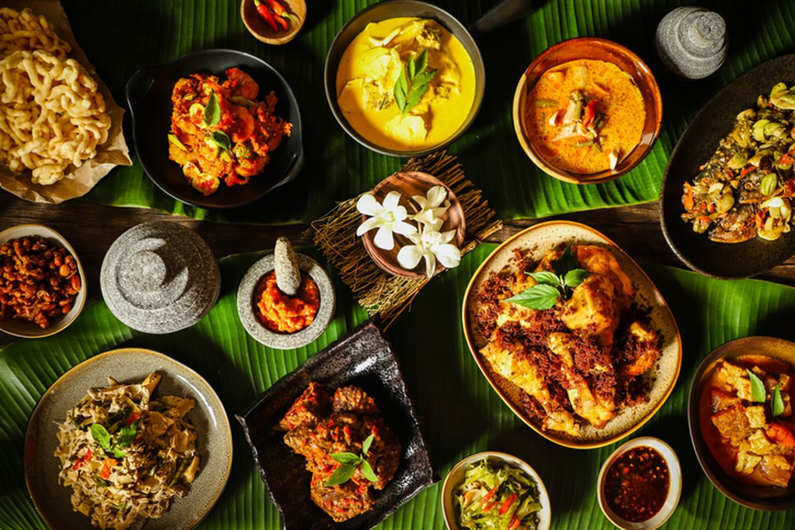

Selamat datang di Traditional Cookpedia, tempat terbaik untuk semua hal tentang makanan! Website kami hadir untuk memberikan inspirasi kuliner yang segar dan bermanfaat, mulai dari resep masakan mudah hingga ulasan restoran terbaru.Temukan tips memasak, ulasan makanan, dan berbagai artikel menarik seputar dunia kuliner. Bergabunglah dengan komunitas kami dan eksplorasi berbagai cara untuk menjadikan setiap hidangan lebih istimewa!
